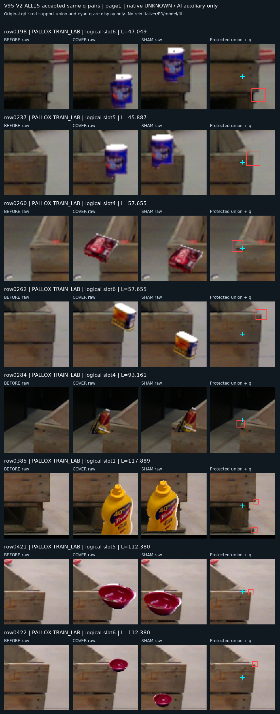
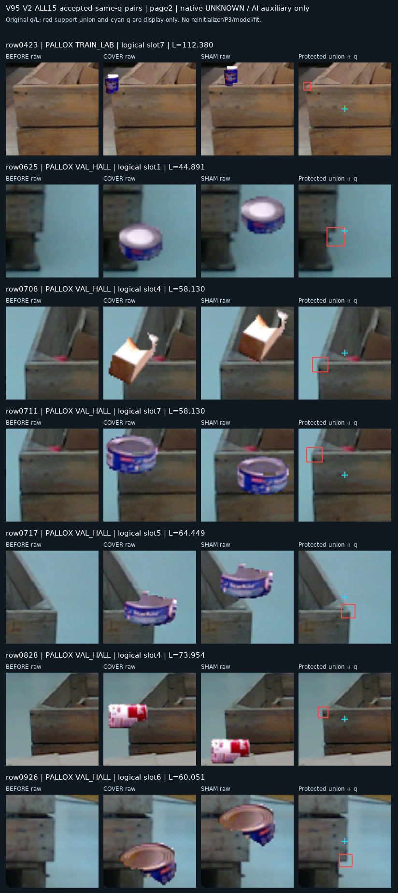

공개 소스 기준 미통과 — C2의 현재 평가 실행은 하지 않습니다.
좌표·crop 크기 고정. 현재 평가 223장 접근 0, PnP 0. 목표는 계속 진행 중입니다.
공개 LOCO 160개와 Pallox 800개 원래 query를 모두 유지했습니다. 원본·가림·대조의 2,880개 항목을 보존했고, 알려진 보임 단서 143개에서 고정 YCB-V 물체 배정으로 구성을 시도했습니다. 마스크 소유가 겹친 픽셀을 제외한 새 구성에서 15쌍이 성립했습니다(Pallox 학습 9, 검증 6; LOCO 0). 첫 구성의 4쌍과 실패 기록도 보존했습니다.
변경한 영상 30개는 같은 좌표에서 새 P3 특징과 RGB crop을 추출했습니다. 원본과 같은 2,850개 항목은 정확히 일치하는 기존 입력을 재사용했습니다. C2는 C1과 같은 26,573개 파라미터 모델을 동일한 seed 194로 새로 초기화해 2,000회 학습했습니다. 문턱은 raw logit 0이고, 체크포인트는 공개 검증 4개 계층의 평균 BCE로만 선택했습니다(선택 step 0).
혼동행렬: 행 [보임 D, 가림 E], 열 [보임 D, 가림 E, 보류 U]. 알려진 라벨만 포함합니다. 보류도 recall 분모에 포함하며, 원래 라벨 불명은 가림 정답으로 사용하지 않습니다.
C2는 step 0이 선택됐습니다. 학습 후 저장한 모든 후보의 검증 평균 BCE가 초기값 ln(2)보다 컸습니다. 아래 C2는 학습한 모델의 개선 결과가 아니라 채택 실패 기록입니다. 초기 logit 0은 고정 부호 규칙상 모두 가림으로 디코딩되므로 가림 recall 100%를 성능 개선으로 해석할 수 없습니다.
| 분할 | 모델 | 입력 | known N | 혼동행렬 | D recall | E recall | 보류율 |
|---|---|---|---|---|---|---|---|
| TRAIN | C1 기존 | 원본 | 68 | [[57, 2, 0], [0, 9, 0]] | 96.6% | 100.0% | 0.0% |
| TRAIN | C1 기존 | 단서 가림 | 9 | [[0, 0, 0], [9, 0, 0]] | — | 0.0% | 0.0% |
| TRAIN | C1 기존 | 단서 피함 | 9 | [[9, 0, 0], [0, 0, 0]] | 100.0% | — | 0.0% |
| TRAIN | C2 선택 상태 (step 0) | 원본 | 68 | [[0, 59, 0], [0, 9, 0]] | 0.0% | 100.0% | 0.0% |
| TRAIN | C2 선택 상태 (step 0) | 단서 가림 | 9 | [[0, 0, 0], [0, 9, 0]] | — | 100.0% | 0.0% |
| TRAIN | C2 선택 상태 (step 0) | 단서 피함 | 9 | [[0, 9, 0], [0, 0, 0]] | 0.0% | — | 0.0% |
| VALIDATION | C1 기존 | 원본 | 95 | [[80, 4, 0], [0, 11, 0]] | 95.2% | 100.0% | 0.0% |
| VALIDATION | C1 기존 | 단서 가림 | 6 | [[0, 0, 0], [6, 0, 0]] | — | 0.0% | 0.0% |
| VALIDATION | C1 기존 | 단서 피함 | 6 | [[6, 0, 0], [0, 0, 0]] | 100.0% | — | 0.0% |
| VALIDATION | C2 선택 상태 (step 0) | 원본 | 95 | [[0, 84, 0], [0, 11, 0]] | 0.0% | 100.0% | 0.0% |
| VALIDATION | C2 선택 상태 (step 0) | 단서 가림 | 6 | [[0, 0, 0], [0, 6, 0]] | — | 100.0% | 0.0% |
| VALIDATION | C2 선택 상태 (step 0) | 단서 피함 | 6 | [[0, 6, 0], [0, 0, 0]] | 0.0% | — | 0.0% |
원본 D · 가림 E · 대조 D를 모두 맞혀야 성공입니다. 같은 물체가 있다는 이유만으로 양쪽을 가림으로 판단하면 실패합니다.
| 분할 | 모델 | 모두 정답 | 비율 |
|---|---|---|---|
| TRAIN | C1 | 0/9 | 0.0% |
| TRAIN | C2 | 0/9 | 0.0% |
| VALIDATION | C1 | 0/6 | 0.0% |
| VALIDATION | C2 | 0/6 | 0.0% |
| 기준 | 실제 | 요구 | 결과 |
|---|---|---|---|
| natural_before_D_recall | 0.0% | ≥ 85.0% | FAIL |
| natural_before_E_recall | 100.0% | ≥ 75.0% | PASS |
| sham_D_recall | 0.0% | ≥ 85.0% | FAIL |
| cover_E_recall | 100.0% | ≥ 75.0% | PASS |
| accepted_VAL_pair_all3_correct_rate | 0.0% | ≥ 75.0% | FAIL |
| VAL_all_known_U_rate | 0.0% | ≤ 5.0% | PASS |
학습 결과를 이해하기 위해 마지막 체크포인트 하나만 별도로 공개 소스에서 읽었습니다. 모델·체크포인트·문턱을 다시 선택하거나 기존 선택 결과를 교체하지 않았습니다.
| 분할 | all known 혼동행렬 | 원본 D recall | 원본 E recall | 대조 D recall | 가림 E recall | 세 장 모두 정답 |
|---|---|---|---|---|---|---|
| TRAIN | [[68, 0, 0], [0, 18, 0]] | 100.0% | 100.0% | 100.0% | 100.0% | 9/9 |
| VALIDATION | [[78, 12, 0], [5, 12, 0]] | 85.7% | 100.0% | 100.0% | 16.7% | 1/6 |
각 행은 원본 / 단서 가림 / 단서 피함 / 보호 범위와 원래 query 표시입니다. 마지막 열의 표시는 모델 입력에 들어가지 않습니다.


전체 보임 후보 143개 중 query의 가장 가까운 native 픽셀이 보호 단서 raster 안에 있는 것은 75개였습니다. 구성에 성공한 15쌍에서는 3개뿐이며, 보호 픽셀 중심까지의 거리 중앙값은 11.24px였습니다. 이는 보조 단서 범위까지의 거리이며 native 정답 좌표 오차가 아닙니다.
보호 단서가 query의 RGB96 중앙 네 샘플과 겹치지 않는 것은 12/15개입니다. 실제 붙인 물체 전체는 더 넓어서, 가림 배치에서도 중앙 네 샘플이 완전히 그대로인 것은 7/15개, 단서를 피한 배치에서는 8/15개입니다. 따라서 단서를 가림/피함과 query 중심을 가림/피함은 같은 조건이 아닙니다. 이것만으로 학습 실패 원인을 단정할 수는 없지만, 다음 소스 구성은 query가 지칭하는 단서를 특정하는 라벨이 필요합니다.
이 라벨은 기록한 특정 물리 단서의 보임과 제어된 가림을 뜻하는 보조 라벨입니다. 원래 native 키포인트와의 대응은 UNKNOWN이며 사람의 native 정답 라벨이 아닙니다. 일부 단서는 query 중심에서 멀고, 가린 후에도 다른 목재가 보이거나 대조 물체가 기록하지 않은 목재를 가릴 수 있습니다. 단일 공개 bin, 검증 6쌍이므로 다양한 목재·정사각형 팔레트에 대한 해결을 입증하지 못합니다. 자기 가림 학습은 이번 단계에 포함되지 않았습니다.
현재 평가의 최신 고정 비교는 V94 C1 보고서에 있습니다. 이번 단계에서는 현재 평가의 영상·라벨·점수를 읽거나 학습·문턱·체크포인트 선택에 사용하지 않았습니다.
상세 결과: ROOT_RESULTS_KO.json · 원본 좌표 유지 · PnP 없음 · 목표 진행 중